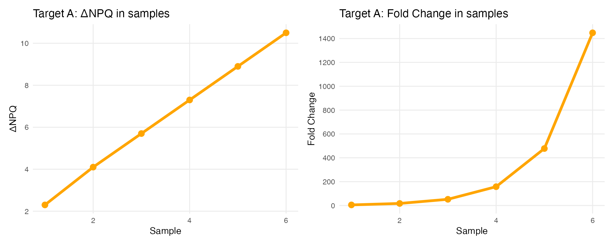

00-understanding-nulisaseq-data.RmdUnderstanding NULISAseq Data
Before diving into data analysis, it’s important to understand how NULISAseq technology works and how the data is generated and normalized.
What is NULISA™ Technology?
NULISA (NUcleic acid-Linked Immuno-Sandwich Assay) is a highly sensitive protein quantification platform that combines immunoassay specificity with next-generation sequencing readout.
The NULISAseq platform uses a proprietary dual selection proximity ligation approach to obtain high sensitivity and high signal-to-noise ratio for multiplexed protein detection:

Key Components:
- Verified antigen-specific antibody pairs - Two antibodies that bind different epitopes on the target protein
- Antibody-specific barcodes - Unique DNA sequences attached to each antibody
- Bridging oligos - Connect the barcodes only when both antibodies bind the same target
- Biotinylated oligos - Enable sequential capture on beads
- PolyA-tailed oligos - Allow for sequencing readout
Technical Workflow
The assay follows these steps:

This dual selection removes assay background and drastically improves signal-to-noise ratio.
Learn More About NULISA™ Technology
For a comprehensive understanding of the NULISA™ platform, we recommend:
NULISA™ Publication
Feng, W., Beer, J.C., Hao, Q. et al. (2023). “NULISA: a proteomic liquid
biopsy platform with attomolar sensitivity and high multiplexing.”
Nature Communications 14, 7238.
Read the full
article
NULISA™ Platform Overview
Watch the NULISATM
Platform Video for a visual explanation of the technology and
workflow.
Technical Documentation
For detailed technical notes on assay design, normalization methods, and
quality control:
See Technical Documentation in
the Additional Resources chapter.
Available NULISAseq Panels
Alamar Biosciences offers several curated panels for disease-specific research, including:
- Inflammation Panel: 250+ immune response markers including 120+ cytokines and chemokines
- CNS Disease Panel: 120+ neuro-specific and neuro inflammation-related proteins
- Mouse Panel: 120+ inflammation, neuro-degeneration and oncogenesis proteins specific to mouse model
- Custom assays: Develop your own biomarker assays with the NULISAqpcr Custom Assay Development Kit
Explore Current Panels: https://alamarbio.com/nulisa-panels/
For detailed panel specifications, target lists, and custom assay options, visit the Alamar Biosciences website
Data Normalization
NULISAseq uses a multi-step normalization process to make protein measurements comparable across samples and plates.
Raw Data: Sequencing Counts
The output from the sequencer is read counts for each target protein in each sample:
- Each protein has a unique barcode
- More reads = more protein present
- Raw counts range from 0 to millions
Step 1: Internal Control (IC) Normalization
Purpose: Correct for sample-to-sample technical variation
Method:
- Each sample includes internal control spike-ins
- Divide each target’s read count by the sample’s IC count
Formula:
Step 2: Inter-Plate Control (IPC) Normalization
Purpose: Correct for plate-to-plate variation
Method:
- Calculate target-specific medians across 3 inter-plate controls (IPCs)
- Divide IC-normalized counts by these IPC target-specific medians
- Rescale by multiplying by 10⁴
Formula:
Step 3: Log2 Transformation
Purpose: Create NPQ (NULISA Protein Quantification) values in log2 scale
Method:
- Add 1 to all values (avoid log(0))
- Take log2 transformation
Formula:
Special normalization for high-abundance targets
Most targets in NULISAseq panels are measured at their lower limit of detection. However, certain targets have exceptionally high endogenous levels that would saturate standard detection:
High-abundance targets:
- Inflammation Panel: CRP and KNG1 in human plasma and CSF
-
CNS Panel: APOE and CRP in human plasma and
CSF
- Mouse Panel: Crp in mouse plasma and serum
Special tuning strategy: To accommodate both high-abundance and low-abundance targets in the same panel, these targets use a designed algorithm during normalization.This transformation is applied before the log₂ transformation step.
Key Note:
- The listed LOD for these targets represents the upper limit of detection
- NPQ values are valid and comparable for downstream analysis
- Detectability is not a concern given the naturally high levels of these proteins
- For novel sample types beyond validated matrices, the algorithm may not apply if abundance levels differ significantly, and NPQ may not be reported
Why Log Transform?
Using NPQ (log2-transformed values) instead of raw counts has many advantages:
✅ Stabilizes variance - Makes data more
homoscedastic
✅ Reduces skewness - Data becomes more normally
distributed
✅ Linearizes relationships - Easier to model
✅ Improves interpretability - Differences = fold
changes
✅ Compresses range - Large values don’t dominate
✅ Reveals clearer patterns - Easier to see biological
signals
NPQ vs Fold Change
Understanding the Relationship
Fold Change is calculated as:
Example:
| Sample | ΔNPQ | Fold Change |
|---|---|---|
| 1 | 2.3 | 5 |
| 2 | 4.1 | 17 |
| 3 | 5.7 | 53 |
| 4 | 7.3 | 161 |
| 5 | 8.9 | 485 |
| 6 | 10.5 | 1457 |
## Warning: package 'patchwork' was built under R version 4.4.1## Warning: Using `size` aesthetic for lines was deprecated in ggplot2 3.4.0.
## ℹ Please use `linewidth` instead.
## This warning is displayed once every 8 hours.
## Call `lifecycle::last_lifecycle_warnings()` to see where this warning was
## generated.
Key Point: NPQ differences are linear and easier to interpret than exponential fold changes!
Working with NPQ Values
Calculating Fold Changes from NPQ
If you need fold changes for interpretation:
# Given NPQ values
npq_disease <- 7.0
npq_healthy <- 4.0
# Calculate difference
delta_npq <- npq_disease - npq_healthy # 3.0
# Convert to fold change
fold_change <- 2^delta_npq # 2^3 = 8Interpretation: Protein is 8 times higher in the disease group compared to healthy.
Comparing Across Targets
NPQ values can be compared across targets because:
- All targets go through same normalization
- Values are on same scale
- Useful for calculating protein ratios
Example use case: Aβ42/Aβ40 ratio for Alzheimer’s diagnosis
| Sample | Target | NPQ |
|---|---|---|
| Sample A (Healthy) | Aβ42 | 9 |
| Sample A (Healthy) | Aβ40 | 6 |
| Sample B (Alzheimer’s) | Aβ42 | 5 |
| Sample B (Alzheimer’s) | Aβ40 | 7 |
Calculating Protein Ratios
Since NPQ values are log₂-transformed, calculating ratios is straightforward: subtract the NPQ values.
Formula for comparisons:
Calculations:
For Sample A (Healthy control):
- NPQ(Aβ42) = 9, NPQ(Aβ40) = 6
- Log₂(Aβ42/Aβ40) = 9 - 6 = 3
- Actual ratio = 2³ = 8 (Aβ42 is 8× more abundant than Aβ40)
For Sample B (Alzheimer’s patient):
- NPQ(Aβ42) = 5, NPQ(Aβ40) = 7
- Log₂(Aβ42/Aβ40) = 5 - 7 = -2
- Actual ratio = 2⁻² = 0.25 (Aβ42 is only 0.25× the amount of Aβ40, or Aβ40 is 4× higher)
| Sample | NPQ Aβ42 | NPQ Aβ40 | Log₂ Ratio | Ratio |
|---|---|---|---|---|
| Sample A (Healthy) | 9 | 6 | 3 | 8.00 |
| Sample B (Alzheimer’s) | 5 | 7 | -2 | 0.25 |
Interpretation:
- Healthy brain: Aβ42/Aβ40 ratio = 8.0
- Alzheimer’s brain: Aβ42/Aβ40 ratio = 0.25
The Aβ42/Aβ40 ratio reflects the amyloid pathology, making this ratio a powerful biomarker for Alzheimer’s disease diagnosis and monitoring.
Data Analysis FAQ
1. How is the limit of detection (LOD) defined
for NULISAseq?
Why do some targets have LOD of 0?
- LOD is calculated separately for each analyte / target using the negative control (NC) samples.
- For NULISAseq, the LOD is defined as follow:
Formula:
- LOD is calculated on the normalized count scale, and then log2-transformed to be on the NPQ scale.
- LOD = 0: Occurs when negative controls show no detectable signal at the current NGS depth.
2. Should I exclude samples below LOD?
We don’t recommend excluding individual values below LOD or replacing NPQ values with LOD.
Why not?
- Excluding or replacing values creates skewed, non-normal distributions
- Violates statistical assumptions for model assumptions for analysis
- Reduces statistical power
Instead, we recommend using different detectability cutoff to exclude targets with low detectability
3. How do I calculate coefficient of variation (CV) for samples?
IMPORTANT: Unlog NPQ values before calculating CV.
NPQ values are in log₂ scale, but CV is only meaningful on the linear scale.
Step-by-step process:
Back-transform NPQ to linear scale:
Calculate mean and standard deviation on linear scale:
Calculate CV:
Example in R:
# For replicate samples of a single target
npq_values <- c(8.5, 8.7, 8.3) # NPQ values (log2 scale)
# Back-transform to linear scale
linear_values <- 2^npq_values - 1
# Calculate CV
mean_linear <- mean(linear_values)
sd_linear <- sd(linear_values)
cv_percent <- (sd_linear / mean_linear) * 100
print(paste0("CV = ", round(cv_percent, 2), "%"))## [1] "CV = 13.87%"4. Can I compare data across different runs?
Yes! IPC normalization is designed to make data comparable across runs.
Quality metrics supporting cross-run comparability include:
- Mean and median IPC CVs typically <10%
- High inter-sample correlations (inter-run Pearson correlation ~ )
In some cases intensity normalization or bridge samples (3-5 samples) can be used for further normalization. This enables longitudinal studies and meta-analyses.
5. How do you assess correlation between NPQ and absolute quantification data from other platforms?
Transform datasets from other platforms to log2 scale first!
Recommended approach:
- Convert absolute quantification values (e.g., pg/mL) to log2 scale
- Compare log2-transformed values against NPQ values
- Visualize with scatterplots before choosing correlation method
Choosing the appropriate correlation method:
✅ Use Pearson correlation (r) when:
- Scatterplot shows approximately linear relationship
- No extreme outliers present
- Data appears normally distributed
✅ Use non-parametric methods (Spearman ρ or Kendall τ) when:
- Scatterplot shows nonlinear trend
- Extreme outliers present
- Very small sample size
- Data far from normal distribution
Note: For non-parametric methods, the specific data transformation is less critical, but log2 transformation still helps with visualization and interpretability.
Continue to: Chapter 1: Data Import